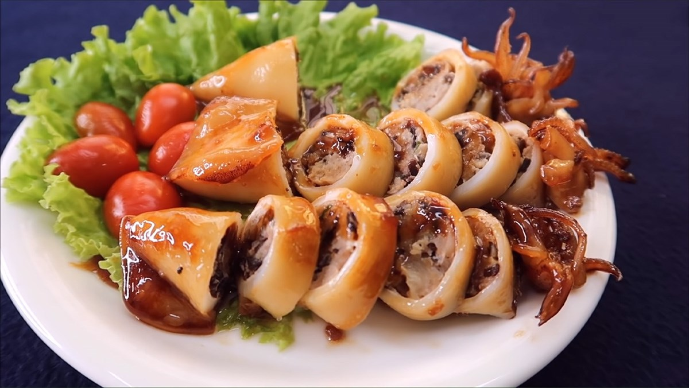
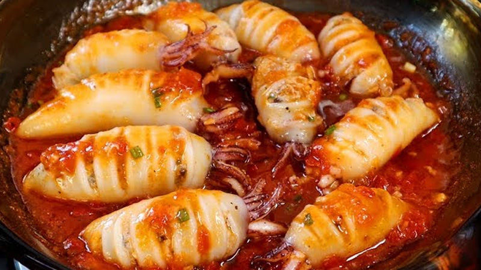
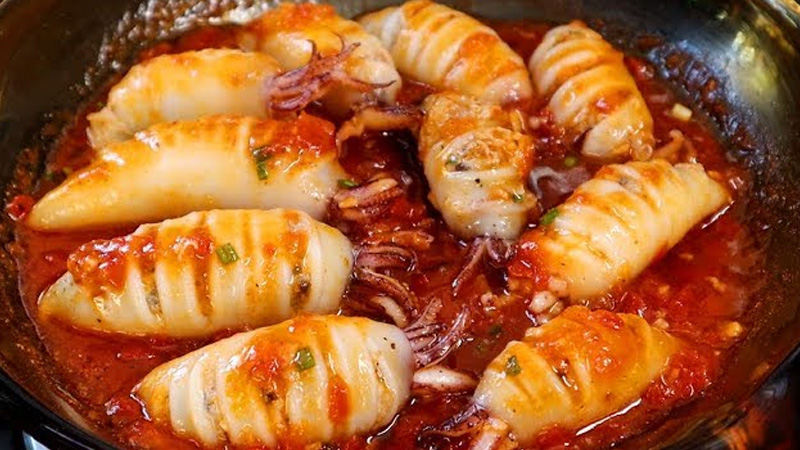
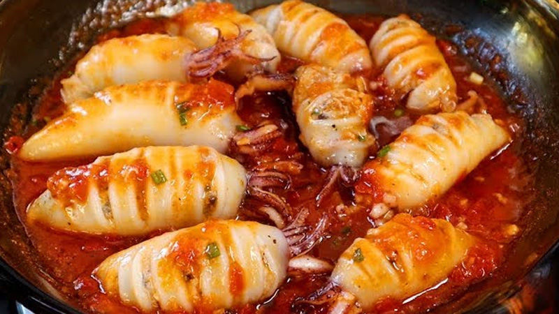

Mực Ống Nhồi Thịt
Mực Ống Nhồi Thịt là món ăn quen thuộc trong bữa cơm gia đình Việt, được yêu thích bởi sự kết hợp độc đáo giữa vị ngọt tự nhiên, dai giòn của mực tươi và nhân thịt đậm đà, thơm lừng. Món ăn này có thể chế biến theo nhiều cách như hấp, chiên, hoặc sốt cà chua, mang đến hương vị phong phú và hấp dẫn.

 


Nguyên liệu
- Mực ống tươi: 500g (chọn con vừa hoặc lớn, thân dày, trắng trong, tươi ngon)
- Thịt nạc heo xay: 200g (chọn thịt nạc vai có lẫn chút mỡ để nhân không bị khô)
- Giò sống: 50g (tùy chọn, giúp nhân dai và kết dính tốt hơn)
- Hành tây: 1 củ nhỏ (khoảng 50g), bóc vỏ, thái hạt lựu nhỏ
- Hành lá: 3-4 nhánh, rửa sạch. Phần đầu trắng băm nhỏ, phần lá xanh thái nhỏ để riêng.
- Cà rốt: 1/2 củ (khoảng 50g), gọt vỏ, thái hạt lựu nhỏ (tùy chọn, tăng màu sắc và vị ngọt)
- Trứng gà: 1 quả
-
Gia vị ướp nhân:
- Nước mắm ngon: 1.5 muỗng canh
- Đường: 1/2 muỗng cà phê
- Tiêu xay: 1/2 muỗng cà phê
- Hạt nêm: 1/2 muỗng cà phê
- Dầu ăn: 1 muỗng canh (để trộn vào nhân giúp nhân mềm)
- Dầu ăn: Để chiên (nếu chọn cách chiên)
-
Nguyên liệu làm sốt cà chua (nếu chọn cách sốt):
- Cà chua: 2 quả, băm nhỏ hoặc xay nhuyễn
- Hành tím: 1 củ, băm nhỏ
- Tỏi: 1 tép, băm nhỏ
- Nước mắm, đường, hạt nêm, tiêu (để nêm sốt)
Cách làm
-
Bước 1: Sơ chế mực
- Mực ống làm sạch: nhẹ nhàng rút đầu và túi mực ra, bỏ ruột, mắt. Lột bỏ lớp màng bên ngoài thân mực. Rửa sạch mực dưới vòi nước chảy, để ráo hoàn toàn.
- Dùng tăm nhọn hoặc mũi dao xăm nhẹ vài lỗ nhỏ quanh thân mực để khi nấu mực không bị co rút quá nhiều và nhân chín đều.
-
Bước 2: Chuẩn bị nhân nhồi
- Hành tây bóc vỏ, thái hạt lựu nhỏ.
- Phần đầu trắng của hành lá băm nhỏ. Phần lá xanh thái nhỏ để riêng, dùng để trang trí sau.
- Cà rốt gọt vỏ, thái hạt lựu nhỏ (nếu dùng).
- Trong một tô lớn, cho thịt nạc heo xay, giò sống (nếu dùng), hành tây băm, đầu hành lá băm, cà rốt (nếu dùng) và trứng gà vào.
- Nêm thêm các gia vị ướp nhân: 1.5 muỗng canh nước mắm, 1/2 muỗng cà phê đường, 1/2 muỗng cà phê tiêu xay, 1/2 muỗng cà phê hạt nêm và 1 muỗng canh dầu ăn.
- Trộn đều tất cả các nguyên liệu. Dùng tay nhồi và bóp thịt thật kỹ khoảng 5-7 phút để nhân dai và thấm gia vị.
-
Bước 3: Nhồi thịt vào mực
- Dùng thìa nhỏ hoặc tay nhồi hỗn hợp thịt vào thân mực. Nhồi vừa phải, không quá đầy (chỉ khoảng 2/3 - 3/4 thân mực) để tránh khi nấu thịt bị bung ra hoặc mực bị rách.
- Sau khi nhồi xong, dùng tăm ghim kín phần đầu mực lại để nhân không bị rơi ra ngoài khi chế biến.
-
Bước 4: Chế biến món mực ống nhồi thịt (Chọn 1 trong các
cách)
-
Cách 1: Hấp
- Xếp mực đã nhồi vào xửng hấp. Đun sôi nước trong nồi hấp.
- Khi nước sôi mạnh, đặt xửng mực vào và hấp khoảng 15-20 phút tùy độ lớn của mực. Mực chín khi thân mực chuyển màu trắng đục và nhân bên trong chín đều.
-
Cách 2: Chiên
- Đặt chảo lên bếp, đổ dầu ăn đủ để chiên ngập mực. Đun nóng dầu ở lửa vừa.
- Khi dầu nóng, nhẹ nhàng cho mực đã nhồi vào chiên. Chiên vàng đều các mặt cho đến khi mực có màu vàng đẹp mắt và nhân bên trong chín.
- Vớt mực ra đĩa có lót giấy thấm dầu để loại bỏ bớt dầu thừa.
-
Cách 3: Sốt cà chua
- Chiên sơ mực đã nhồi cho hơi vàng các mặt (không cần chín hẳn). Vớt ra để ráo dầu.
- Trong một chảo khác, phi thơm hành tím băm và tỏi băm.
- Cho cà chua băm hoặc xay nhuyễn vào xào. Đảo đều cho cà chua mềm và ra màu.
- Thêm khoảng 100-150ml nước lọc, nêm nếm gia vị với nước mắm, đường, hạt nêm, tiêu cho vừa ăn. Đun sôi.
- Cho mực đã chiên sơ vào nồi sốt cà chua. Đun nhỏ lửa, đậy nắp khoảng 10-15 phút cho mực và nhân chín đều, sốt sánh lại và thấm vào mực.
-
Cách 1: Hấp
-
Bước 5: Hoàn thiện và thưởng thức
- Gắp mực ống nhồi thịt ra đĩa.
- Nếu hấp: có thể rưới thêm chút nước hấp hoặc làm nước mắm chua ngọt pha gừng để chấm.
- Nếu chiên hoặc sốt: rưới phần sốt cà chua lên trên mực.
- Trang trí với hành lá thái nhỏ và rau thơm tùy thích. Dùng nóng với cơm trắng.
Mẹo nhỏ để Mực Ống Nhồi Thịt ngon hơn:
- Chọn mực: Chọn mực ống tươi, thân dày, trắng trong, có độ đàn hồi tốt. Mực tươi sẽ ngọt và dai giòn hơn.
- Sơ chế mực: Làm sạch mực thật kỹ và để ráo nước hoàn toàn. Việc xăm nhẹ thân mực giúp mực không bị co rút quá nhiều khi nấu.
-
Nhân mực:
- Nên chọn thịt nạc vai có lẫn chút mỡ để nhân không bị khô.
- Giò sống giúp nhân dai và kết dính tốt hơn.
- Không nhồi nhân quá đầy để tránh mực bị bung hoặc rách khi chín.
-
Chế biến:
- Nếu hấp: không hấp quá lâu sẽ làm mực bị dai.
- Nếu chiên: chiên nhanh ở lửa vừa để mực vàng giòn bên ngoài mà không bị dai bên trong.
- Nếu sốt cà chua: nêm nếm sốt vừa ăn, có thể thêm chút ớt để tăng vị cay nhẹ.
- Nước chấm/Sốt: Tùy theo cách chế biến, hãy chuẩn bị nước chấm hoặc sốt phù hợp để tăng thêm hương vị cho món ăn.
- Bảo quản: Mực ống nhồi thịt đã chế biến có thể bảo quản trong tủ lạnh 1-2 ngày. Khi ăn, hâm nóng lại.
▶️ Xem video hướng dẫn chi tiết
← Quay lại trang chủ
Bình luận và Đánh giá
Đánh giá của bạn
Chưa có bình luận nào.